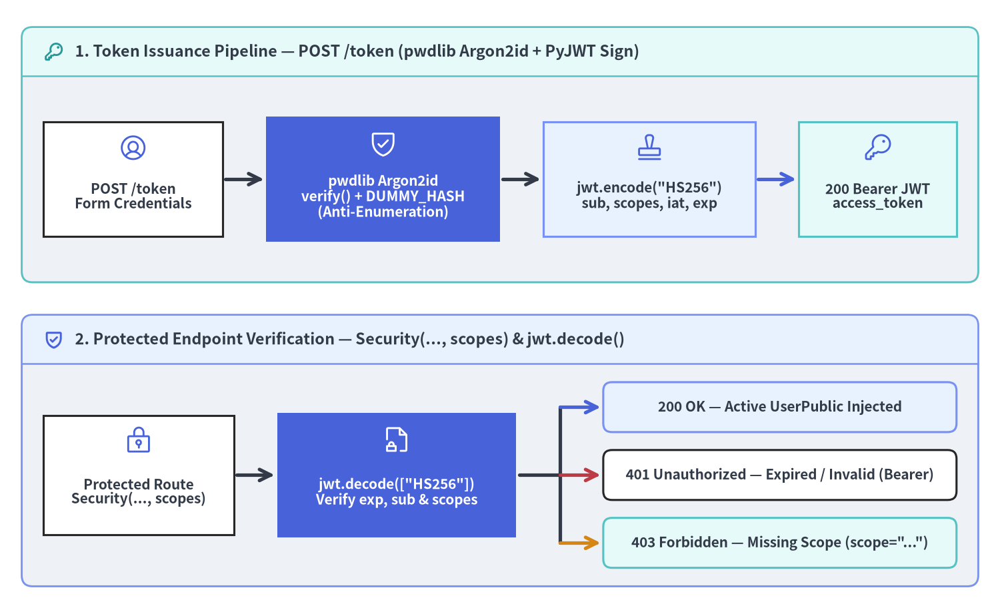
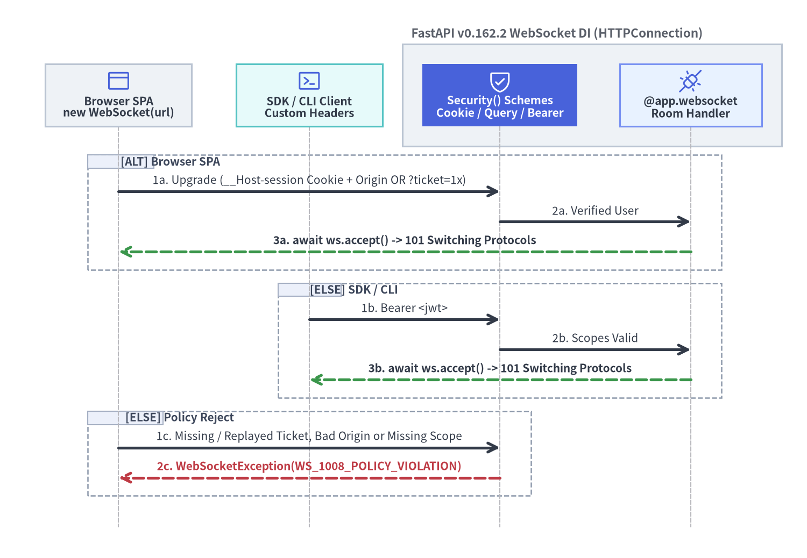

JWT（PyJWT + Argon2）と WebSocket 認可
本番環境の FastAPI v0.162.2 アプリケーションでは、HTTP API に対してメモリハードな pwdlib Argon2id パスワードハッシュ（および DUMMY_HASH によるユーザー列挙攻撃対策）とステートレスな PyJWT ベアラートークン検証を組み合わせ、さらに Starlette 共通基底クラス HTTPConnection（v0.144.0 以降）を介して同じ Security()・SecurityScopes 依存関係グラフを WebSocket ハンドシェイクへそのまま拡張します。

1. パスワードハッシュ（pwdlib Argon2id）とステートレス PyJWT 検証
近年の FastAPI 公式推奨スタックでは、保守が停滞した passlib や python-jose に代わり、pwdlib[argon2]（PasswordHash.recommended()）および PyJWT（import jwt）を採用することで、bcrypt の 72 バイト切り捨て問題や古い暗号ラッパーへの依存を解消しています。認証・OAuth2 スコープ認可・抽出器 の依存ツリー内でこれらを運用する際は、次の 4 つのセキュリティ不変条件を徹底します。
| 防御レイヤー | 推奨実装パターン | 防止できる脆弱性・攻撃手法 |
|---|---|---|
| メモリハード KDF | PasswordHash.recommended()（pwdlib[argon2]） |
Argon2id のメモリコストとユーザーごとの暗号学的ランダムソルトにより GPU/ASIC 総当たり解析を抑止 |
列挙防止 DUMMY_HASH |
起動時に DUMMY_HASH = password_hash.hash(...) を事前生成し、未登録ユーザー時も password_hash.verify(pw, DUMMY_HASH) を実行 |
存在しないユーザー名とパスワード不一致のあいだに生じる約 50ms+ の応答時間差（タイミング列挙）を排除 |
| アルゴリズム固定と必須クレーム | jwt.decode(token, KEY, algorithms=["HS256"], options={"require": ["sub", "iat", "exp"]}) |
"alg": "none" による署名バイパス、RS256/HS256 鍵混同攻撃、無期限トークンの悪用を遮断 |
| 署名鍵エントロピーと外部注入 | KMS や環境変数（pydantic-settings 設定管理と SQL DB）から 256-bit 以上の鍵を読み込み、固定文字列をコードに埋め込まない |
ソースコード流出時のオフライン JWT 偽造を防止 |
1.1 /token 発行・DUMMY_HASH・get_current_active_user の完全実装
以下の実装では、authenticate_user() が users_db に存在しないユーザー名に対しても必ず DUMMY_HASH との Argon2id 照合を実行します。下流の get_current_user() は明示的な algorithms=["HS256"] 許可リストで JWT を検証し、ExpiredSignatureError および InvalidTokenError を RFC 6750 準拠の 401 Unauthorized へ変換したうえで、SecurityScopes の不足を 403 Forbidden、アカウント凍結状態を get_current_active_user() で段階的に検査します。
import os
import secrets
from datetime import datetime, timedelta, timezone
from typing import Annotated
import jwt
from fastapi import Depends, FastAPI, HTTPException, Security, status
from fastapi.security import (
OAuth2PasswordBearer,
OAuth2PasswordRequestForm,
SecurityScopes,
)
from fastapi.testclient import TestClient
from jwt.exceptions import ExpiredSignatureError, InvalidTokenError
from pwdlib import PasswordHash
from pydantic import BaseModel
SECRET_KEY = os.environ.get("JWT_SECRET_KEY") or secrets.token_hex(32)
ALGORITHM = "HS256"
ACCESS_TOKEN_EXPIRE_MINUTES = 15
password_hash = PasswordHash.recommended()
DUMMY_HASH = password_hash.hash(secrets.token_urlsafe(16))
class Token(BaseModel):
access_token: str
token_type: str
class UserRecord(BaseModel):
username: str
hashed_password: str
scopes: list[str]
disabled: bool = False
class UserPublic(BaseModel):
username: str
scopes: list[str]
disabled: bool = False
alice_password = secrets.token_urlsafe(12)
users_db: dict[str, UserRecord] = {
"alice": UserRecord(
username="alice",
hashed_password=password_hash.hash(alice_password),
scopes=["me:read", "reports:export"],
),
}
oauth2_scheme = OAuth2PasswordBearer(
tokenUrl="/token",
scopes={
"me:read": "Read current user profile",
"reports:export": "Export audit reports",
},
)
def authenticate_user(
db: dict[str, UserRecord],
username: str,
password: str,
) -> UserRecord | None:
user = db.get(username)
if user is None:
# ユーザー存在有無のタイミング漏洩を防ぐため、未登録時も DUMMY_HASH で Argon2id を実行する
password_hash.verify(password, DUMMY_HASH)
return None
if not password_hash.verify(password, user.hashed_password):
return None
return user
def create_access_token(
*,
subject: str,
scopes: list[str],
expires_delta: timedelta,
) -> str:
now = datetime.now(timezone.utc)
payload = {
"sub": subject,
"scopes": scopes,
"iat": now,
"exp": now + expires_delta,
}
return jwt.encode(payload, SECRET_KEY, algorithm=ALGORITHM)
app = FastAPI()
@app.post("/token", response_model=Token)
async def login_for_access_token(
form_data: Annotated[OAuth2PasswordRequestForm, Depends()],
) -> Token:
user = authenticate_user(users_db, form_data.username, form_data.password)
if user is None:
raise HTTPException(
status_code=status.HTTP_401_UNAUTHORIZED,
detail="Incorrect username or password",
headers={"WWW-Authenticate": "Bearer"},
)
granted_scopes = [s for s in form_data.scopes if s in user.scopes]
access_token = create_access_token(
subject=user.username,
scopes=granted_scopes,
expires_delta=timedelta(minutes=ACCESS_TOKEN_EXPIRE_MINUTES),
)
return Token(access_token=access_token, token_type="bearer")
async def get_current_user(
security_scopes: SecurityScopes,
token: Annotated[str, Depends(oauth2_scheme)],
) -> UserRecord:
auth_header = (
f'Bearer scope="{security_scopes.scope_str}"'
if security_scopes.scopes
else "Bearer"
)
try:
payload = jwt.decode(
token,
SECRET_KEY,
algorithms=[ALGORITHM],
options={"require": ["sub", "iat", "exp"]},
)
except ExpiredSignatureError as exc:
raise HTTPException(
status_code=status.HTTP_401_UNAUTHORIZED,
detail="Token has expired",
headers={"WWW-Authenticate": auth_header},
) from exc
except InvalidTokenError as exc:
raise HTTPException(
status_code=status.HTTP_401_UNAUTHORIZED,
detail="Could not validate credentials",
headers={"WWW-Authenticate": auth_header},
) from exc
username = payload.get("sub")
token_scopes = payload.get("scopes", [])
if not isinstance(username, str) or not isinstance(token_scopes, list):
raise HTTPException(
status_code=status.HTTP_401_UNAUTHORIZED,
detail="Could not validate credentials",
headers={"WWW-Authenticate": auth_header},
)
user = users_db.get(username)
if user is None:
raise HTTPException(
status_code=status.HTTP_401_UNAUTHORIZED,
detail="Could not validate credentials",
headers={"WWW-Authenticate": auth_header},
)
for required_scope in security_scopes.scopes:
if required_scope not in token_scopes:
raise HTTPException(
status_code=status.HTTP_403_FORBIDDEN,
detail=f"Not enough permissions (missing {required_scope})",
headers={"WWW-Authenticate": auth_header},
)
return user
async def get_current_active_user(
current_user: Annotated[
UserRecord,
Security(get_current_user, scopes=["me:read"]),
],
) -> UserPublic:
if current_user.disabled:
raise HTTPException(
status_code=status.HTTP_400_BAD_REQUEST,
detail="Inactive user",
)
return UserPublic(
username=current_user.username,
scopes=current_user.scopes,
disabled=current_user.disabled,
)
@app.get("/users/me", response_model=UserPublic)
async def read_users_me(
current_user: Annotated[UserPublic, Depends(get_current_active_user)],
) -> UserPublic:
return current_user
@app.get("/reports/export")
async def export_audit_report(
current_user: Annotated[
UserPublic,
Security(get_current_active_user, scopes=["reports:export"]),
],
) -> dict[str, str]:
return {"exported_by": current_user.username, "status": "ready"}
client = TestClient(app)
login_res = client.post(
"/token",
data={"username": "alice", "password": alice_password, "scope": "me:read"},
)
narrow_jwt = login_res.json()["access_token"]
assert client.get("/users/me", headers={"Authorization": f"Bearer {narrow_jwt}"}).status_code == 200
assert client.get("/reports/export", headers={"Authorization": f"Bearer {narrow_jwt}"}).status_code == 403
ステートレス JWT は exp 到達まで署名単体で有効と判定されるため、アクセストークンの有効期限は短く（5～15 分）保ち、ログアウトや権限剥奪の即時反映が求められるシステムでは DB・キャッシュ上の disabled フラグや token_version 世代番号を併用します。
2. WebSocket 認証と v0.144.0+ の Security() ネイティブ対応
FastAPI v0.144.0 より前は、組み込みの fastapi.security 抽出器が __call__ 引数を request: Request と型付けしていたため、@app.websocket(...) ルートで OAuth2PasswordBearer や APIKeyCookie をそのまま流用できませんでした。v0.144.0 から v0.162.2 現在では、すべての標準 fastapi.security スキーム（APIKeyCookie・APIKeyQuery・APIKeyHeader・OAuth2PasswordBearer・OAuth2AuthorizationCodeBearer・HTTPBearer・HTTPBasic・OpenIdConnect）が HTTP Request と WebSocket の共通基底クラスである Starlette の HTTPConnection を受け取る設計に統一されています。

2.1 ブラウザ DOM API の制約と HTTPConnection 抽出器の使い分け
サーバー側の FastAPI v0.162.2 が WebSocket 上で OAuth2PasswordBearer や APIKeyHeader を扱えるようになっても、ブラウザの JavaScript 環境には WHATWG WebSocket DOM 仕様上の制約があり、new WebSocket(url, protocols) コンストラクタには任意の Authorization ヘッダーや X-API-Key ヘッダーを付与する手段が存在しません。接続元クライアントの種別に応じて次の 3 方式を使い分けます。
| 資格情報トランスポート | fastapi.security 抽出器 |
対象クライアントと必須の防御策 |
|---|---|---|
__Host-session Cookie |
APIKeyCookie(name="__Host-session", auto_error=False) |
同一オリジン SPA: HttpOnly; Secure; SameSite=Lax を付与し、WebSocket には CORS プリフライトが適用されないため 必ず Origin ヘッダーを許可リスト検証して CSWSH（Cross-Site WebSocket Hijacking）を防ぐ |
| 使い捨てワンタイムチケット | APIKeyQuery(name="ticket", auto_error=False) |
クロスオリジン SPA: 事前に HTTPS の POST /ws/tickets（Bearer 認証）で 30 秒寿命のランダムな不透明チケットを発行し、接続時に .pop() で原子的消費する（長寿命 JWT を ?token= に載せない） |
Authorization: Bearer 等 |
OAuth2PasswordBearer(..., auto_error=False) / APIKeyHeader |
Python/Go ワーカー・CLI・モバイルアプリ: WebSocket Upgrade リクエストに直接標準 HTTP ヘッダーを付与して認証する |
2.2 ハンドシェイク前の拒否制御（WS_1008_POLICY_VIOLATION と auto_error=True）
fastapi.security の抽出器で auto_error=True のまま資格情報が欠落すると、WebSocket ハンドラ実行前の依存解決フェーズで HTTPException(status_code=401) が送出され、HTTP Upgrade 自体が 401 応答（TestClient では WebSocketDenialResponse）として拒否されます。複数トランスポートを受け付けるエンドポイントでは、各抽出器を auto_error=False に設定し、await ws.accept() を呼ぶ前に統合依存関数内で Origin 検査と SecurityScopes 照合を行い、違反時は WebSocketException(code=status.WS_1008_POLICY_VIOLATION) でクリーンに切断します。
import secrets
import time
from datetime import timedelta
from typing import Annotated
import pytest
from fastapi import (
FastAPI,
Header,
Security,
WebSocket,
WebSocketDisconnect,
WebSocketException,
status,
)
from fastapi.security import (
APIKeyCookie,
APIKeyQuery,
OAuth2PasswordBearer,
SecurityScopes,
)
from fastapi.testclient import TestClient
from pydantic import BaseModel
ALLOWED_WS_ORIGINS = {"https://app.example.com"}
ws_cookie_scheme = APIKeyCookie(name="__Host-session", auto_error=False)
ws_ticket_scheme = APIKeyQuery(name="ticket", auto_error=False)
ws_bearer_scheme = OAuth2PasswordBearer(tokenUrl="/token", auto_error=False)
class EphemeralTicket(BaseModel):
username: str
scopes: list[str]
exp: float
session_cookies: dict[str, EphemeralTicket] = {}
one_time_tickets: dict[str, EphemeralTicket] = {}
ws_app = FastAPI()
@ws_app.post("/ws/tickets")
async def issue_ws_ticket(
principal: Annotated[
UserRecord,
Security(get_current_user, scopes=["rooms:stream"]),
],
) -> dict[str, str]:
ticket_id = secrets.token_urlsafe(24)
one_time_tickets[ticket_id] = EphemeralTicket(
username=principal.username,
scopes=["rooms:stream"],
exp=time.time() + 30.0,
)
return {"ticket": ticket_id}
async def authenticate_ws_caller(
security_scopes: SecurityScopes,
session_id: Annotated[str | None, Security(ws_cookie_scheme)] = None,
ticket: Annotated[str | None, Security(ws_ticket_scheme)] = None,
bearer_token: Annotated[str | None, Security(ws_bearer_scheme)] = None,
origin: Annotated[str | None, Header()] = None,
) -> str:
username: str | None = None
granted_scopes: list[str] = []
if session_id is not None:
# Cookie 認証のブラウザ WebSocket では必ず Origin 許可リストを検証する（CSWSH 対策）
if origin not in ALLOWED_WS_ORIGINS:
raise WebSocketException(
code=status.WS_1008_POLICY_VIOLATION,
reason="Untrusted Origin for cookie session",
)
record = session_cookies.get(session_id)
if record is not None and record.exp > time.time():
username, granted_scopes = record.username, record.scopes
elif ticket is not None:
# プロキシログ等からのリプレイを防ぐため、ワンタイムチケットを原子的に消費する
record = one_time_tickets.pop(ticket, None)
if record is not None and record.exp > time.time():
username, granted_scopes = record.username, record.scopes
elif bearer_token is not None:
try:
payload = jwt.decode(
bearer_token,
SECRET_KEY,
algorithms=[ALGORITHM],
options={"require": ["sub", "exp"]},
)
sub = payload.get("sub")
scopes = payload.get("scopes", [])
if isinstance(sub, str) and isinstance(scopes, list):
username, granted_scopes = sub, [str(s) for s in scopes]
except InvalidTokenError:
pass
if username is None:
raise WebSocketException(
code=status.WS_1008_POLICY_VIOLATION,
reason="Missing or invalid WebSocket credentials",
)
for required_scope in security_scopes.scopes:
if required_scope not in granted_scopes:
raise WebSocketException(
code=status.WS_1008_POLICY_VIOLATION,
reason=f"Missing required scope: {required_scope}",
)
return username
@ws_app.websocket("/ws/rooms/{room_id}")
async def secure_room_socket(
ws: WebSocket,
room_id: str,
username: Annotated[
str,
Security(authenticate_ws_caller, scopes=["rooms:stream"]),
],
) -> None:
await ws.accept()
try:
while True:
msg = await ws.receive_json()
await ws.send_json(
{"room": room_id, "user": username, "echo": msg["text"]}
)
except WebSocketDisconnect:
pass
ws_client = TestClient(ws_app)
users_db["alice"].scopes.append("rooms:stream")
stream_jwt = create_access_token(
subject="alice",
scopes=["rooms:stream"],
expires_delta=timedelta(minutes=5),
)
ticket_val = ws_client.post(
"/ws/tickets",
headers={"Authorization": f"Bearer {stream_jwt}"},
).json()["ticket"]
with ws_client.websocket_connect(f"/ws/rooms/ops?ticket={ticket_val}") as socket:
socket.send_json({"text": "deploy-ok"})
assert socket.receive_json() == {"room": "ops", "user": "alice", "echo": "deploy-ok"}
with pytest.raises(WebSocketDisconnect) as replay_err:
with ws_client.websocket_connect(f"/ws/rooms/ops?ticket={ticket_val}"):
pass
assert replay_err.value.code == status.WS_1008_POLICY_VIOLATION
[!TIP] 数分～数時間にわたる長寿命
WebSocketセッションでは、メッセージ受信ループ内でもトークンのexpや失効イベントを定期確認し、期限切れ時はawait ws.close(code=status.WS_1008_POLICY_VIOLATION)で明示的に切断してください。続いて双方向ルーム制御や Server-Sent Events を扱う ネイティブ SSE・JSONL・WebSocket および ASGI ミドルウェア境界を扱う ASGI ミドルウェアとスレッドプール制御 へ進んでください。